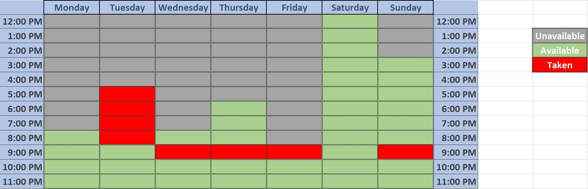

ANDREW KIM
- TEACHER
- 선생님
- せんせい
- 老师
- CHIKGU
Practical, enthusiastic, and humorous, Andrew Kim has taught students of all ages (todlers to adults) and all economic backgrounds(refugee to millionaires). He currently studies Chemical Engineering at the Cooper Union for the Advancement Science and Art in New York City, #1 Regional Colleges North. He also graduated top of his highschool class at Dalat International School, Malaysia with a GPA over 4.0. He loves teaching Science and Math and has 5 years of experience teaching English as a second language.
Resume Education AwardsOnce Andrew understands, he teaches to understand it better for himself and his students. In class, he often thinks to himself, "if only he/she said it this way...." Knowing and hating the shortcomings of classroom education, Andrew turns teaching into a personalized experience so that his students easily absorb and enjoy what they learn.
Getting an education is not learning. Going to school is not studying. Telling someone something is not teaching. Teaching is building a relationship. Empathizing, adapting, and encouraging is, therefore, essential to great teaching. Andrew believes that classroom education limits what a student can do. Contrary to this, he treats his students as gifted individuals, setting the bar just a little higher so his students can improve themselves.
Andrew believes that a teacher is an older brother or sister. A teacher is someone who leads by example, understands circumstances, gives a helping hand, and inspires a better version of oneself.
Andrew always begins class by asking how the day and week has been for his student, trying to get to know the student as a person. He often also shares about a quick event so the student knows that his/her teacher isn't a robot. He also asks about his student's interests so that he can bring up analogies that are familiar to that student.
Andrew gets his student to take a quick quiz on learning styles because he will use that information to cater his teaching style to his student. His teaching, however, is not limited to his student's learning style. He makes sure to go over material in as many different ways as necessary.
Andrew always makes time to answer questions that students send him via email or other social media. He encourages students to resolve confusions ASAP by contacting him. Students in Malaysia still ask him questions even though he cannot teach them anymore.
Andrew makes sure to bring in tips on how to study and other life advice, especailly to younger kids who are nervous about how their futures will turn out. Learning about what goes on outside of school is invaluable to succeeding in life but is often missing in school education.
All times are in Eastern Standard Time (EST) 
Andrew checks his email every day and is frequently on Facebook Messenger.